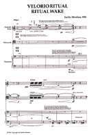
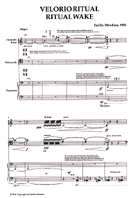
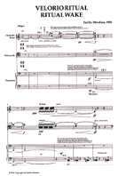
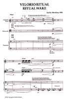
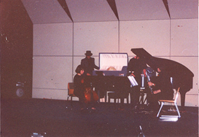

 
 Portada interior por: Johanna
Vogelsang, Las Vegas.
Partitura
Serie Músicos
Venezolanos de Vanguardia 2 Velorio Ritual, Caracas:
Fundación Vicente Emilio Sojo, 1995. Depósito Legal: CP 158951.
Disponible directamente del autor.
PDF

Estreno en el
Crane New Music Festival, Potsdam College-SUNY, NY,
Estados Unidos, 1993.


CD Mundos - Emilio
Mendoza. Caracas: ArteMus, 1998. Disponible
directamente del autor.
Sobre Velorio Ritual:
El
presente velorio se centra en la posible desaparición futura de
nuestra especie humana. Considerando que el colapso final de los
planetas y estrellas es inevitable con la expansión del
universo, nuestra especie humana puede tener todavía una muy
larga vida por disfrutar. Sólo, por supuesto, si no persistimos
en acelerar nuestra muerte inminente al destruir el único hogar
posible en el universo. Esta composición está enfocada en una
celebración ritual, es un velorio anticipado de nuestra posible
extinción. Puede servir como un recordatorio de este riesgo,
ofreciendo un espacio para reflexionar sobre las maneras que
podemos contribuir en prevenir una desaparición prematura de la
humanidad, la extinción final de la vida misma.
Los velorios son momentos especiales en nuestra
sociedad donde todos nos reunimos, callados o hablando en voz
baja, detenemos nuestro día a día con los apuros vivenciales,
el tiempo se alarga y nos ponemos a pensar y recordar sobre el
difunto que velamos, sobre la familia, amigos, seres queridos,
sobre la vida, sobre los valores que conservamos como grupo de
seres. Este ritual de velorio es un tiempo que nos aporta la
música para soltar el hilo de la vida y pensar cómo podemos
mejorar la existencia, de nosotros y del mundo donde
existimos.
La música
fue inspirada en dos tradiciones de entierros: Las celebraciones
de los wake-keeping
que el autor asistió durante su investigación de campo en
Kokrobitey, Ghana, África Occidental, septiembre - diciembre,
1981. En este ritual, el cuerpo muerto es velado durante la
noche antes de su entierro, con una fiesta masiva donde coexiste
la ejecución de instrumentos, la danza, cantos rituales y
festivos. El bambuco “Obra Dios por el Hombre” del pueblo de San
Lorenzo, Provincia de Esmeraldas, Ecuador, que es ejecutado en
entierros. Velorio Ritual
puede ser ejecutada en cualquier situación de entierro, real o
de ficción, con objetos o comportamientos de velorio, urnas,
candelabros, flores, incienso, vestidos negros, luces bajas,
anteojos oscuros, bebidas alcohólicas, café, galleticas,
sopita o simplemente como música en un concierto normal
de tipo occidental o en grabación distribuida.
Eventos
importantes, especiales y extraordinarios en nuestras sociedades
se llevan a cabo a través de rituales y la actividad musical ha
sido un compañero constante de ellos, ya sea en ejecución o en
el acto de la escucha colectiva. En muchas culturas del mundo,
la transformación de un ser vivo al estado de muerte se ha
tratado como un paso hacia un lugar diferente, hacia lo
desconocido. El ritual de la muerte, que en esta composición se
asume como un "velorio", es básicamente un ritual de despedida,
resumiendo en este sentido todas las situaciones de entierro. El
ritual de velorio se convierte en un momento de profundidad y
reflexión donde los seres humanos que aún están con vida, se
quedan con la certeza de que la muerte es una vez más presente
como una verdad innegable. En este sentido, la noción de por lo
menos dos mundos como parte de la vida misma se concibe y el
ritual se convierte en el umbral o ventana para el proceso de
pasar entre estos dos lugares de nuestra existencia y
no-existencia.
La música
parece ser capaz de permitir que rocemos emocionalmente ese otro
mundo, donde asumimos que todavía existe el ser fallecido de
alguna manera después de desaparecer del mundo real, resultado
de nuestro terco rechazo del estado terminal biológico que
sustenta la existencia. Por lo tanto, el paso a la muerte puede
ser considerada como una recreación sin esperanza de la
necesidad de vivir. En este punto, la composición Velorio
Ritual, como se explica arriba, trata en última instancia
con la situación de nuestra especie donde nuestro paso hacia el
estado de muerte se trunca por la extinción, es decir, la
condición en la cual todos los seres humanos desaparecen del
dominio de la vida, y la vida misma muere.
Fue estrenada por el Crane
Contemporary Ensemble en el Crane New Music Festival, Snell
Hall, Crane School of Music, Potsdam College-SUNY, Potsdam, NY,
Estados Unidos, 27/4/1993. Recibió la Mención Honorífica, Premio
Nacional de Composición, Caracas, Venezuela, 1992 y fue
publicada por la Fundación Vicente Emilio Sojo (FUNVES),
Caracas, 1995, dentro de la serie "Músicos Venezolanos de
Vanguardia". La producción de la partitura fue posible gracias a
un subsidio de la Research Foundation of the State University of
New York, y a la asistencia de la Office of College Relations,
Potsdam College - SUNY, Potsdam, NY. Su grabación apareció en el
disco compacto de la Sociedad Venezolana de Música Contemporánea
SVMC, 25
Años - Antología de Compositores de Venezuela I, Caracas:
SVMC, 2002.
Está
dedicada a mi tío Ing. Jaime Mendoza quien me ayudó durante mis
estudios de doctorado en Washington, DC, con una beca de $150
mensuales. Una coincidencia estraña ocurrió cuando la partitura
recién impresa fue recogida de la imprenta en Caracas, 1995, a
las 8:00 am y recibí una llamada luego de cargar las cajas en el
carro, que mi tío había muerto y en el mismo día era el entierro
de mi tío. Llevé las cajas a su velorio justo a tiempo y pude
colocar la primera partitura dentro de la urna cuando iba a ser
descendido a tierra. ¡Gracias, Tío!
About
Ritual Wake:
The present wake is focused on the possible
future disappearance of our human species. Considering that
the final collapse of the planets and stars is unavoidable
with the expansion of the universe, our human species may
still have a very long life to enjoy. Only, of course, if we
do not persist in accelerating our ultimate death by
destroying our only possible home in the universe. This
composition is focused on a ritual celebration, an anticipated
wake for our possible extinction. It may serve as a reminder
of this risk, providing a space intended to devote some
thoughts on the ways we may contribute to prevent a premature
disappearance of mankind, the ultimate extinction of life
itself. Wakes are special moments in our society when we all
get together, silently and speaking softly, stop our everyday
lives with existential troubles, time lengthens and we start
to think and remember about the deceased one, the family,
friends, loved ones, about life and the values we hold as a
group of human beings. This ritual is a time which music brings to us in
order to release the thread of life and to think about how we
can improve our
lives and the world in which we exist.
The music was inspired by two burial traditions:
Celebrations of the "wake-keeping" that the author attended
during his field research in Kokrobitey, Ghana, West Africa,
from September to December, 1981. In this ritual, the dead
body is veiled in the night before his funeral, with a massive
party where coexists performance of instruments, dance,
rituals and festive songs. The bambuco "Obra Dios por
el hombre" of the people of San Lorenzo, Province of
Esmeraldas, Ecuador, which is performed in burials. Ritual
Wake may be performed in any burial situation, real or fictional,
with objects or behaviors typical of funerals, coffin,
candles, flowers, incense, black dresses, low lights,
sunglasses, alcoholic drinks, coffee, crackers, soup or just
as a normal, western-type of concert or distributed recording.
Important and extraordinary
events in our societies take place through rituals, and
musical activity has been a constant companion to them whether
through performance or in the act of collective listening. In
many cultures of the world, the transformation of a living
being to the state of death is treated usually as a passage
into somewhere different, into the unknown. The ritual of
death, which in this composition is assumed as a “wake,” is
basically a farewell ceremonial resuming in this sense, all
burial situations. The ritual wake becomes a moment of
profoundness and thoughtfulness, since the humans that are
still with life are left with the certainty that death is once
again present as an undeniable truth. In this sense, the
notion of at least two worlds as part of life itself is
grasped and the wake becomes the threshold or window for the
process of passing between these two places of our existence
and non-existence.
Music seems to be able of
allowing us to emotionally sense this other world, where we
assume that the dead person still exists in someway after
disappearing from our known reality, as a result of our
stubborn rejection of the terminal biological state that
sustains existence. Therefore, the passage into death can be
considered as a hopeless recreation of the need to live on. In
this point, the composition Ritual Wake, as
explained above, deals ultimately with the situation in our
species where our customary “passage” into the dominion or
state of death is truncated by extinction, that is, the
condition in which all human beings disappear from the
dominion of life, and life itself dies.
It was premiered by the Crane
Contemporary Ensemble in 1993, within the Crane New Music
Festival, State University of New York College at Potsdam, NY,
USA, on the 27th of April, 1993. It received the Venezuelan
National Composition Prize in 1992 and its score was published
by the Fundación Vicente Emilio Sojo (Funves) in the series "Músicos Venzolanos de
Vanguardia," Caracas, 1995. The production of the score
was possible by a grant form the Research Foundation of the
State University of New York and the assistance of the Office
of College Relations, Potsdam College - SUNY, Potsdam, NY. It
appears in the first CD of the Venezuelan Society for
Contemporary Music (SVMC), "25 Años - Antología de
Compositores de Venezuela I," 2002.
It was dedicated to my uncle
Ing. Jaime Mendoza who helped me financially during my
Doctor's Degree studies in Washington, DC, with $150 monthly.
A strange coincidence occurred when the score came out from
the printers in Caracas in 1995, and I went to pick it up at
8:00 am, and after putting the boxes in the car I was called
and informed that my uncle had died and that he was to be
buried on the same day. I took the boxes straight to his wake
and the first printed score from the box was put inside his
coffin just in time before he was lowered down to earth. Thank
you, Uncle Jaime!